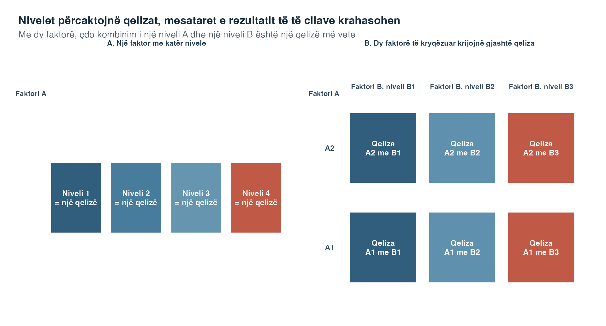
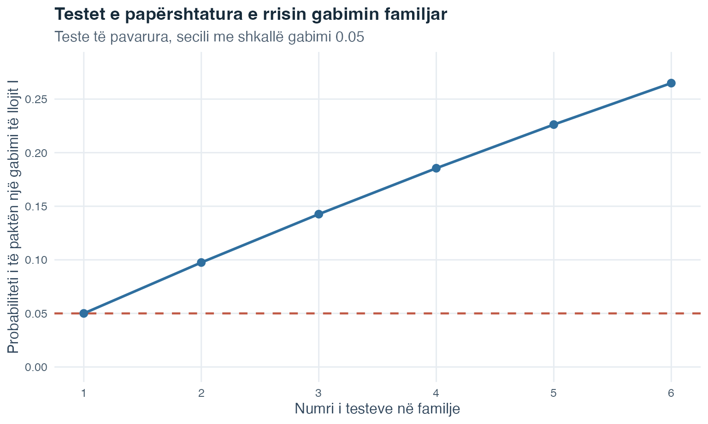
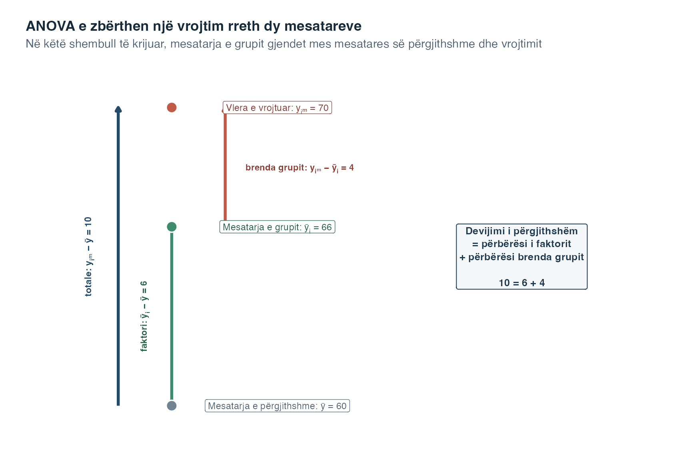
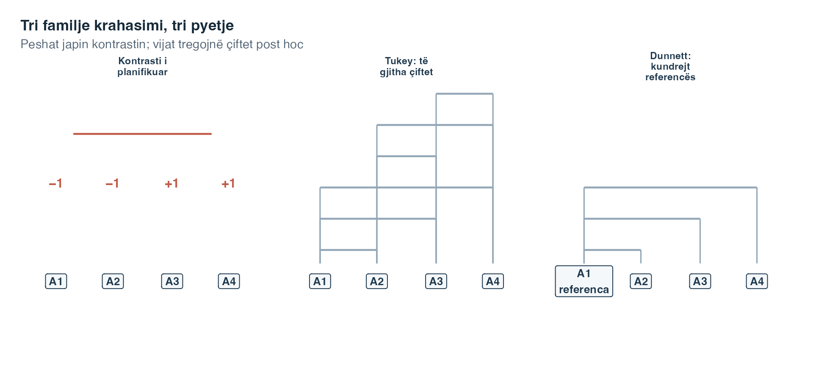
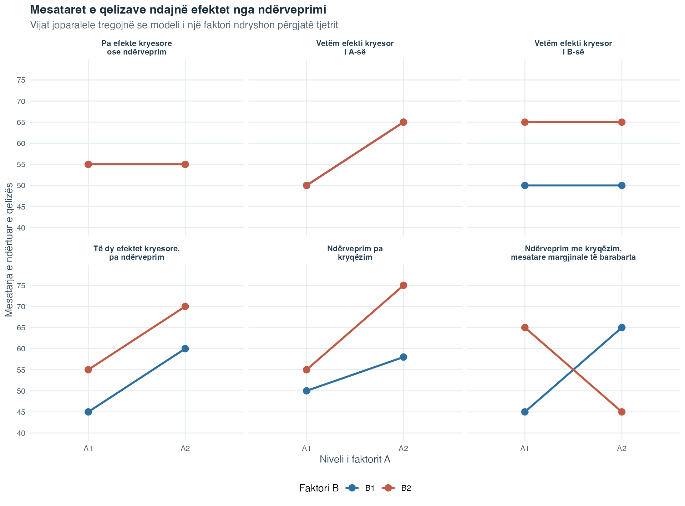
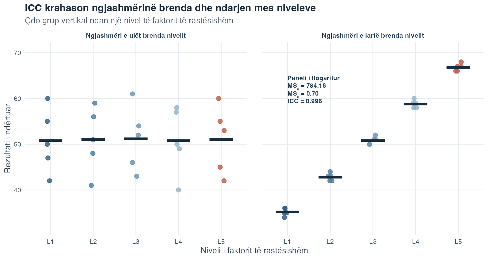
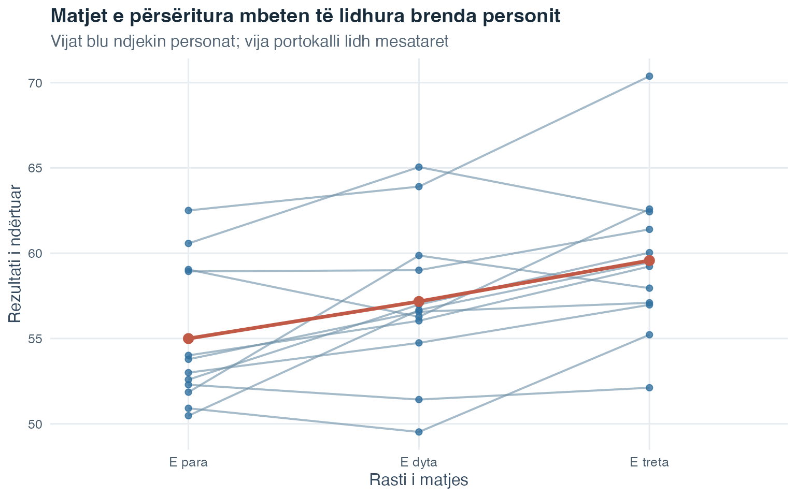
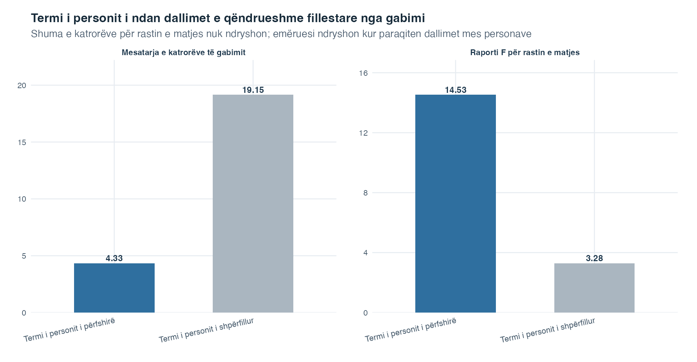

Fleta e ushtrimeve
Zgjidh PDF për shtypje ose Word për redaktim.
Hyrje në Statistikë · Tema 8
Një test t krahason dy mesatare. Tema 3 ndau dy dizajne: testi t për kampione të pavarura krahason dy grupe të përbëra nga raste të ndryshme, ndërsa testi t për kampione të çiftuara krahason dy matje të lidhura, shpesh nga të njëjtët persona. Çfarë bëjmë kur pyetja zgjerohet nga dy mesatare në tri, katër ose më shumë?
ANOVA është korniza më e gjerë për këtë hap të radhës. Një faktor është një ndryshore shpjeguese kategorike, kategoritë e së cilës quhen nivele. ANOVA njëfaktoriale mes grupeve e zgjeron krahasimin e kampioneve të pavarura në disa nivele ku marrin pjesë raste të ndryshme. ANOVA njëfaktoriale me matje të përsëritura e zgjeron krahasimin e çiftuar në disa nivele ose raste matjeje të lidhura te të njëjtat njësi ose persona. Kryerja e një testi t të veçantë dhe të papërshtatur për çdo çift do të thotë ta vlerësosh secilin test pa marrë parasysh testet e tjera në grup. Kjo krijon shumë mundësi për të bërë një gabim të llojit I, domethënë një rezultat pozitiv të rremë kur hipoteza zero përkatëse është e vërtetë.
Analiza e variancës, e shkurtuar ANOVA, fillon me një test të përgjithshëm. Ky test bën një pyetje të vetme të përgjithshme për të gjitha grupet:
A ka dëshmi se të paktën dy mesatare të popullatës ndryshojnë?
Emri mund të duket fillimisht i çuditshëm. ANOVA i krahason mesataret duke analizuar ndryshueshmërinë. Ajo e ndan ndryshueshmërinë totale të rezultatit sasior në ndryshueshmëri që lidhet me përkatësinë në grup dhe ndryshueshmëri që mbetet brenda grupeve. Raporti i tyre prodhon statistikën \(F\).
Metoda me dy mesatare nuk është zhdukur. Në rastin e veçantë me saktësisht dy grupe të pavarura, testi i zakonshëm t me variancë të bashkuar dhe ANOVA njëfaktoriale me faktor fiks testojnë të njëjtën barazi nën të njëjtat kushte të variancës së barabartë. Për statistikat e tyre vlen
\[ F(1,N-2)=t(N-2)^2. \]
Ngritja në katror e heq shenjën e \(t\)-së, prandaj \(F\) nuk tregon se cila mesatare është më e lartë. Ajo pyet vetëm nëse dy mesataret ndryshojnë. Kështu, testi dyanësh t dhe ky test \(F\) me një shkallë lirie në numërues japin të njëjtën vlerë p. ANOVA bëhet veçanërisht e dobishme kur një pyetje e përgjithshme duhet të bashkërendojë më shumë se dy mesatare ose më shumë se një faktor.
Kjo nuk është largim nga regresioni. Tema 7 tregoi si mund të paraqitet një ndryshore parashikuese kategorike me ndryshore treguese dhe si mund të testohen së bashku disa koeficiente të lidhura. ANOVA merr të njëjtën ide të modelit linear dhe e organizon rreth faktorëve, mesatareve të grupeve dhe shumave të katrorëve.
Pyetja udhëzuese: Kur krahasojmë disa mesatare grupesh, si mund ta peshojë një test i vetëm i përgjithshëm ndarjen e tyre kundrejt ndryshueshmërisë që mbetet brenda grupeve?
| Gjuha e regresionit të shumëfishtë | Gjuha e ANOVA-s | E njëjta ide themelore |
|---|---|---|
| Rezultat sasior | Rezultat sasior | Për çdo njësi vëzhgimi modelohet një vlerë e matur |
| Ndryshore parashikuese kategorike | Faktor | Përkatësia në kategori ndihmon në përcaktimin e mesatares së përshtatur |
| Kategoria referuese dhe koeficientët tregues | Nivelet e faktorit dhe krahasimet e grupeve | Disa kategori kërkojnë disa parametra të bashkërenditur |
| Testi global ose i ndërfutur \(F\) | Testi i përgjithshëm \(F\) | Një hipotezë zero e përbashkët testohet me ndryshueshmërinë e përfaqësuar në raport me ndryshueshmërinë e mbetur |
| Termi i ndërveprimit | Ndërveprimi i faktorëve | Marrëdhënia për një ndryshore parashikuese ose faktor varet nga një tjetër |
Fjalori ndryshon sepse ndryshon theksi shkencor. Në regresion, shpesh fillojmë duke lexuar pjerrësitë individuale. Në ANOVA, fillojmë me faktorin në tërësi dhe pyesim nëse të gjitha mesataret e tij të popullatës mund të jenë të barabarta. Vlerat e përshtatura, rezidualet, shumat e katrorëve dhe logjika e \(F\) mbeten të lidhura me atë që tashmë ke mësuar.
Testi i përgjithshëm \(F\) pyet nëse ndonjë nga mesataret e popullatës ndryshon. Nuk identifikon se cilat ndryshojnë. Një kontrast i planifikuar është krahasim i përqendruar i mesatareve të grupeve, i përcaktuar para se të shqyrtohen rezultatet. Një krahasim post hoc zgjidhet më pas. Këto procedura u përgjigjen pyetjeve më të caktuara, me përshtatje kur testohen disa përfundime të lidhura.
Në fund të kësaj teme, duhet të jesh në gjendje:
ANOVA përdor një ndryshore sasiore të rezultatit, vlerën e matur, mesataret e së cilës krahasohen, dhe një ose më shumë ndryshore shpjeguese kategorike të quajtura faktorë.
Një nivel është një kategori e faktorit. Nëse faktori është kushti i studimit me katër kategori, ai ka katër nivele. Një qelizë është një grup i vëzhguar që përcaktohet nga një kombinim nivelesh të faktorëve. Në ANOVA-n njëfaktoriale, çdo nivel është një qelizë. Në një dizajn me dy faktorë, çdo kombinim i një niveli të faktorit A me një nivel të faktorit B formon një qelizë të veçantë.
| Termi | Përkufizimi fillestar | Shembull strukture |
|---|---|---|
| Rezultati | Matje sasiore, mesataret e së cilës krahasohen | Një rezultat të nxëni për çdo rast |
| Faktori | Ndryshore shpjeguese kategorike | Kushti i studimit |
| Niveli | Një kategori e faktorit | Kushti referues |
| Qeliza | Raste që ndajnë një kombinim nivelesh të faktorëve | Niveli 1 i faktorit A bashkë me nivelin 2 të faktorit B |
| Dizajni i balancuar | Numër i barabartë rastesh në çdo grup ose qelizë përkatëse | 40 raste në secilin nga katër kushtet |
| Dizajni i pabalancuar | Madhësi të pabarabarta të grupeve ose qelizave | 30, 35, 40 dhe 55 raste |
Lexoje tabelën duke nisur nga matja. Së pari identifiko rezultatin sasior. Pastaj identifiko faktorin kategorik dhe renditi nivelet e tij. Më pas përcakto qelizat që krijohen nga kombinimet e sakta të niveleve. Vetëm pasi këto role të jenë të qarta, numëroji vëzhgimet dhe vendos nëse dizajni është i balancuar. Ky rend parandalon një gabim të zakonshëm: trajtimin e vetë kodeve të regjistruara të kategorive si largësi sasiore kuptimplota.
Fjala qelizë është e thjeshtë në një dizajn me një faktor, por mund të ngatërrohet më lehtë kur shtohet një faktor i dytë. Figura vijuese i mban dy strukturat krah për krah.

Lexoje panelin A nga e majta në të djathtë. Një faktor ka katër nivele dhe çdo nivel identifikon një grup rastesh, prandaj ka katër qeliza. Në panelin B, zgjidh një rresht nga faktori A dhe një kolonë nga faktori B. Kryqëzimi i tyre është një qelizë. Dy nivele të A të kryqëzuara me tri nivele të B krijojnë kështu \(2\times3=6\) qeliza.
Kutitë tregojnë pozicione në dizajn dhe jo vlera numerike të rezultatit. Një rast i vrojtuar i përket një qelize sipas niveleve të faktorëve të tij, ndërsa matjet e rezultatit brenda asaj qelize përmblidhen më vonë me mesataren e qelizës. Ngjyrat ndihmojnë t’i dallosh kolonat, por nuk kodojnë vlera më të larta ose më të ulëta. Diagrami gjithashtu nuk na tregon nëse dizajni është i balancuar. Balanca varet nga numri i rasteve që e zënë realisht secilën qelizë.
Balanca është veçori e dizajnit, jo kërkesë e ANOVA-s. ANOVA njëfaktoriale mund të përdorë grupe me madhësi të pabarabarta. Megjithatë, balanca i bën aritmetikën dhe interpretimin veçanërisht të qartë. Në dizajnet faktoriale, pabalanca ndikon edhe në mënyrën si ndahen efektet e ndryshme, prandaj analiza e zgjedhur duhet të dokumentohet me kujdes.
Njësia e vëzhgimit është rasti që kontribuon një rezultat në analizë. Në një studim mes grupeve, çdo person i përket vetëm një grupi dhe kontribuon një rezultat në atë krahasim. Identifikimi i njësisë na ndihmon të vendosim nëse rastet janë të pavarura.
Dizajni përcakton çfarë mund të përfundohet. Caktimi i rastësishëm do të thotë se rastet ndahen mes niveleve të faktorit përmes rastësisë. Kur caktimi i rastësishëm kryhet siç duhet në një eksperiment, diferencat mes grupeve mund të mbështesin një interpretim shkakësor për faktorin e manipuluar. Pa caktim të rastësishëm, ANOVA mund të përshkruajë përsëri diferencat mesatare, por nuk mund të vërtetojë vetë se faktori i shkaktoi ato.
Para se të llogaritësh diçka, bëj dy pyetje: Sa faktorë ka dhe a shfaqet i njëjti person në më shumë se një kusht? Përgjigjet e përcaktojnë dizajnin.
| Dizajni | Organizimi i vrojtimeve | Çfarë zgjeron |
|---|---|---|
| Njëfaktorial mes grupeve | Një faktor; persona të ndryshëm ndodhen në nivelet e tij | Testin t për kampione të pavarura kur faktori ka dy nivele |
| Njëfaktorial me matje të përsëritura | Një faktor; të njëjtët persona maten në të gjitha nivelet ose rastet | Testin t për kampione të çiftuara kur faktori ka dy nivele |
| Shumëfaktorial mes grupeve | Dy ose më shumë faktorë; persona të ndryshëm ndodhen në qelizat e kryqëzuara | ANOVA-n njëfaktoriale, tani me efekte kryesore dhe ndërveprime |
| Shumëfaktorial me matje të përsëritura | Dy ose më shumë faktorë brenda personit; të njëjtët persona japin vrojtime të lidhura në kombinimet e tyre | ANOVA-n njëfaktoriale me matje të përsëritura, tani me disa efekte brenda personit dhe ndërveprime |
| Dizajn i përzier | Të paktën një faktor mes grupeve dhe një faktor brenda personit | Dallimet mes grupeve dhe ndryshimin brenda personit në një dizajn |
Për shembull, matja një herë e tri grupeve të ndryshme është dizajn mes grupeve. Matja e të njëjtëve persona në tri raste është dizajn me matje të përsëritura. Matja e disa grupeve në disa raste është dizajn i përzier, sepse përkatësia në grup ndryshon mes personave, ndërsa rasti i matjes ndryshon brenda personit.
Këtu, dizajn i përzier përshkruan bashkimin e faktorëve mes personave dhe brenda personit. Më vonë, model i përzier me efekte fikse dhe të rastësishme përshkruan një model që përmban të dy llojet e efekteve. Këto ide takohen shpesh, por dy shprehjet u përgjigjen pyetjeve të ndryshme: e para përshkruan si u mblodhën vrojtimet, e dyta si paraqiten efektet.
Pyetja udhëzuese: Nëse një rresht i të dhënave i përket një personi, a mund të shfaqet me kuptim i njëjti person në një nivel tjetër të faktorit? Përgjigjja të tregon nëse ato rreshta mund të trajtohen si të pavarur.
Me \(p\) grupe, ka
\[ \frac{p(p-1)}{2} \]
krahasime të ndryshme në çift. Katër grupe prodhojnë gjashtë çifte. Dhjetë grupe prodhojnë 45. Nëse çdo krahasim testohet në të njëjtin nivel të papërshtatur, rritet mundësia e të paktën një rezultati pozitiv të rremë në tërë familjen. Norma e gabimit për familjen e testeve është probabiliteti për të bërë të paktën një gabim të llojit I brenda atij grupi të përcaktuar përfundimesh.
Për \(m\) teste të pavarura, ku secili kryhet me probabilitetin \(\alpha\) të gabimit të llojit I, shkalla e saktë familjare e gabimit është
\[ \alpha_{\text{family}}=1-(1-\alpha)^m. \]
Fjala familje i referohet grupit të përfundimeve që trajtohen së bashku. Kushti i pavarësisë ka rëndësi sepse krahasimet në çift nga të njëjtat grupe shpesh ndajnë vëzhgime dhe prandaj janë të varura.

Boshti horizontal numëron sa teste të pavarura i përkasin familjes. Boshti vertikal jep mundësinë e të paktën një rezultati pozitiv të rremë kur të gjitha hipotezat zero përkatëse janë të vërteta. Pika e parë është 0.05 sepse kryhet një test në nivelin 0.05. Vija ngrihet me çdo mundësi shtesë për rezultat pozitiv të rremë dhe arrin rreth 0.265 te gjashtë teste. Lakorja nuk është rezultat i ANOVA-s dhe as shkalla e gabimit për çdo grup krahasimesh të varura. Ajo paraqet formulën e saktë të testeve të pavarura të shprehur më sipër.
ANOVA e përgjithshme e zëvendëson atë përmbledhje testesh të papërshtatura në çift me një test fillestar hipoteze. Nëse tregon një diferencë, mund të vijojnë krahasime të përqendruara me një strategji që i përshtatet pyetjes kërkimore.
Një ANOVA njëfaktoriale ka një faktor me \(p\) nivele. Le të jetë \(\mu_i\) mesatarja e popullatës në nivelin \(i\). Hipoteza zero është
\[ H_0:\mu_1=\mu_2=\cdots=\mu_p. \]
Hipoteza alternative është
\[ H_1:\text{të paktën dy mesatare të popullatës ndryshojnë}. \]
Hipoteza alternative nuk thotë se çdo mesatare ndryshon nga çdo mesatare tjetër. Gjithashtu nuk përcakton se cila diferencë ekziston. Për këtë arsye, një rezultat i përgjithshëm domethënës kërkon një fazë të dytë më të përqendruar para se të emërtohen grupe të veçanta.
Për vëzhgimin \(m\) në nivelin \(i\), shkruaje rezultatin si \(y_{im}\). Le të jetë \(n_i\) numri i rasteve në nivelin \(i\), \(N=\sum_i n_i\) numri i përgjithshëm i rasteve, \(\bar y_i\) mesatarja e kampionit në nivelin \(i\) dhe \(\bar y\) mesatarja e përgjithshme nëpër të gjitha rastet.
Këto madhësi na lejojnë ta përshkruajmë ndryshueshmërinë totale si dy devijime të lidhura.
Për çdo vëzhgim,
\[ y_{im}-\bar y = (\bar y_i-\bar y)+(y_{im}-\bar y_i). \]
Lexoje këtë barazi nga e majta në të djathtë:
Të tre termat janë në të njëjtën shkallë të rezultatit. Diagrami vijues përdor një vrojtim qëllimisht të thjeshtë për të treguar si përshtaten largësitë e tyre vertikale para se të ngrihet ndonjë vlerë në katror.

Fillo te mesatarja e përgjithshme 60. Kalimi te mesatarja 66 e grupit të këtij rasti mbulon 6 pikë. Ky është përbërësi i faktorit, sepse tregon ku ndodhet qendra e përshtatur e grupit ndaj qendrës së përgjithshme. Kalimi nga mesatarja e grupit te rezultati i vrojtuar 70 mbulon 4 pikët e mbetura. Ky është përbërësi brenda grupit, sepse tregon si ndryshon ky rast nga qendra e grupit të vet. Së bashku, shigjeta e gjelbër dhe ajo portokalli mbulojnë të njëjtën largësi si shigjeta blu totale: \(10=6+4\).
ANOVA e zbaton të njëjtën ndarje për çdo vrojtim. Pastaj i ngre largësitë në katror që devijimet pozitive dhe negative të mos anulohen dhe i mbledh ato për të gjitha rastet. Figura nuk nënkupton se çdo vrojtim ndodhet mbi të dyja mesataret ose se faktori e shkaktoi përbërësin prej gjashtë pikësh. Rastet e tjera mund të ndodhen nën cilëndo mesatare, ndërsa interpretimi shkakësor vazhdon të varet nga dizajni.
ANOVA i ngre në katror dhe i mbledh këto devijime. Shuma totale e katrorëve është
\[ SS_{\text{total}} = \sum_{i=1}^{p}\sum_{m=1}^{n_i}(y_{im}-\bar y)^2. \]
Shuma e katrorëve e faktorit, e quajtur edhe shuma e katrorëve mes grupeve, është
\[ SS_A = \sum_{i=1}^{p}n_i(\bar y_i-\bar y)^2. \]
Shumëzimi me \(n_i\) ka rëndësi sepse mesatarja e grupit përfaqëson çdo rast në atë grup.
Shuma e katrorëve e gabimit, e quajtur edhe shuma e katrorëve brenda grupeve, është
\[ SS_e = \sum_{i=1}^{p}\sum_{m=1}^{n_i}(y_{im}-\bar y_i)^2. \]
Ndarja e saktë është
\[ SS_{\text{total}}=SS_A+SS_e. \]
Këtu, gabimi nuk do të thotë se dikush ka bërë një gabim. Ai është ndryshueshmëria që nuk përfaqësohet nga mesataret e niveleve të faktorit në këtë model. Mund të përmbajë dallime individuale, ndryshueshmëri të matjes dhe çdo burim tjetër të pamodeluar.
Shumat e katrorëve rriten me numrin e vëzhgimeve dhe prandaj nuk mund të krahasohen drejtpërdrejt kur kanë numra të ndryshëm pjesësh të lira. Shkallët e lirisë japin hapin vijues.
Shkallët e lirisë për modelin njëfaktorial janë
\[ df_A=p-1,\qquad df_e=N-p,\qquad df_{\text{total}}=N-1. \]
Ato ndahen njësoj si shumat e katrorëve:
\[ df_{\text{total}}=df_A+df_e. \]
Shprehja shkallët e lirisë tregon sa pjesë informacioni mund të ndryshojnë lirisht pasi vendoset një kufizim. Përfytyro tre numra që duhet të japin shumën 5. Dy të parët mund t’i zgjedhësh lirisht, por i treti përcaktohet më pas në mënyrë që shuma të jetë 5. Prandaj, tre numrat kanë vetëm dy pjesë të lira, ose \(3-1\) shkallë lirie.
Numërimet e ANOVA-s ndjekin të njëjtën logjikë. Pasi mesatarja e përgjithshme fiksohet, vetëm \(N-1\) devijime totale mund të ndryshojnë lirisht. Pasi \(p\) mesataret e grupeve lidhen me atë mesatare të përgjithshme, mbeten vetëm \(p-1\) devijime të pavarura të mesatareve të grupeve. Brenda grupeve, vlerësimi i një mesatareje për çdo grup përdor \(p\) pjesë, duke lënë \(N-p\) shkallë lirie të rezidualeve.
Një katror mesatar është një shumë katrorësh e pjesëtuar me shkallët e saj të lirisë:
\[ MS_A=\frac{SS_A}{df_A}, \qquad MS_e=\frac{SS_e}{df_e}. \]
Statistika e testit të përgjithshëm është
\[ F=\frac{MS_A}{MS_e}. \]
Numëruesi përshkruan ndarjen e mesatareve të grupeve në raport me shkallët e tij të lirisë. Emëruesi përshkruan ndryshueshmërinë e mbetur brenda grupeve. Kur mesataret e popullatës janë të barabarta dhe kushtet e modelit vlejnë, të dy katrorët mesatarë vlerësojnë të njëjtën ndryshueshmëri gabimi dhe \(F\) priret të jetë afër 1. Vlerat më të mëdha tregojnë se mesataret e grupeve janë më të ndara sesa do të sugjeronte zakonisht ndryshueshmëria brenda grupeve.
Ky raport është intuita qendrore e ANOVA-s. Dy panelet vijuese i mbajnë të pandryshuara tri mesataret e grupeve dhe ndryshojnë vetëm sa shpërndahen vrojtimet brenda atyre grupeve.

Në të dy panelet, rombet e bardha ndodhen te 50, 60 dhe 70, ndërsa vija e ndërprerë e mesatares së përgjithshme ndodhet te 60. Prandaj ndarja e lidhur me faktorin është e njëjtë. Secili panel e vërteton këtë numerikisht me \(MS_A=600.00\). Brezat e trashë gjysmëtransparentë dhe pikat tregojnë atë që ndryshon: largësitë vertikale nga vrojtimet te rombi i grupit të tyre.
Në panelin e majtë këto largësi janë të shkurtra, prandaj \(MS_e=2.28\) dhe \(F=263.62\). Në panelin e djathtë mesataret e grupeve nuk kanë lëvizur, por largësitë brenda grupeve janë shumë më të mëdha. Emëruesi rritet në \(MS_e=58.00\) dhe raporti zvogëlohet në \(F=10.34\). Kjo është e gjithë logjika pamore e \(F\): i njëjti sinjal në numërues duket më pak i veçantë kur rritet ndryshueshmëria e sfondit në emërues.
Numrat janë një krahasim i krijuar për të veçuar logjikën e raportit. Ata nuk japin evidencë për një popullatë reale dhe nuk përcaktojnë një kufi universal mes një \(F\) të madh dhe një \(F\) të vogël. Shpërndarja e referencës dhe dy shkallët e saj të lirisë nevojiten ende për të vendosur sa i pazakontë është një raport i vrojtuar nën \(H_0\).
Shpërndarja \(F\) përcaktohet nga dy shkallë lirie, \(df_A\) dhe \(df_e\). Vlera p është probabiliteti në bishtin e djathtë për një vlerë \(F\) të paktën po aq të madhe sa ajo e vëzhguar nën \(H_0\).
| Burimi | Shuma e katrorëve | Shkallët e lirisë | Katrori mesatar | F |
|---|---|---|---|---|
| Faktori A | \(SS_A\) | \(p-1\) | \(SS_A/(p-1)\) | \(MS_A/MS_e\) |
| Gabimi | \(SS_e\) | \(N-p\) | \(SS_e/(N-p)\) | |
| Totali | \(SS_{\text{total}}\) | \(N-1\) |
Rreshtat tregojnë ku caktohet ndryshueshmëria në këtë model. Rreshti i faktorit mat ndarjen mes mesatareve të përshtatura të grupeve. Rreshti i gabimit mat devijimet e rasteve rreth atyre mesatareve të përshtatura. Rreshti total shënon tërë ndryshueshmërinë e rezultatit rreth mesatares së përgjithshme. Lexoje rreshtin e faktorit për ta rindërtuar testin: pjesëtoje shumën e tij të katrorëve me shkallët e lirisë për të marrë \(MS_A\), pastaj pjesëtoje me \(MS_e\) nga rreshti i gabimit për të marrë \(F\). Qelizat bosh janë të qëllimshme, sepse rreshti i gabimit dhe ai total nuk marrin secili një statistikë të veçantë të përgjithshme \(F\) në këtë tabelë.
Një rezultat domethënës \(F\) e hedh poshtë barazinë e të gjitha mesatareve të popullatës. Ende nuk tregon cilat mesatare ndryshojnë, nëse diferencat kanë rëndësi praktike ose nëse faktori i shkaktoi ato.
Për modelin njëfaktorial të zhvilluar këtu, nivelet e faktorit zgjidhen qëllimisht sepse pikërisht ato kushte janë në qendër. Ky quhet faktor fiks. Çdo vëzhgim mund të shkruhet si
\[ y_{im}=\mu_i+\varepsilon_{im}, \]
ku \(\varepsilon_{im}\) është devijimi i rastit nga mesatarja e grupit të tij në popullatë. Ky model kërkon:
Grafikët diagnostikues nuk i vërtetojnë supozimet. Ata ndihmojnë në identifikimin e modeleve që bien ndesh me modelin. Mos e fshi kurrë një vëzhgim të papërshtatshëm vetëm sepse heqja e tij e bën \(F\) më të madh.
Matjet e përsëritura te i njëjti person nuk janë raste të pavarura. Ato kërkojnë strukturën e matjeve të përsëritura që trajtohet më poshtë në këtë temë.
Një rezultat i përgjithshëm tregon se diku ekziston një diferencë. Një kontrast e shndërron një krahasim të përqendruar mesataresh në një shumë të peshuar:
\[ D=\sum_{i=1}^{p}c_i\bar y_i, \qquad \sum_{i=1}^{p}c_i=0. \]
Numrat \(c_i\) janë peshat e kontrastit. Peshat pozitive dhe negative i vendosin nivelet në anë të kundërta të krahasimit. Shumëzimi i çdo peshe me të njëjtën konstante të ndryshme nga zeroja e ndryshon shkallën e \(D\), por jo krahasimin përmbajtësor.
Një kontrast i thjeshtë krahason dy nivele, prandaj vetëm dy pesha janë të ndryshme nga zeroja. Një kontrast kompleks bashkon më shumë se dy nivele, si krahasimi i mesatares së disa kushteve aktive me një referencë. Peshat mund të kodojnë edhe një model të renditur të përcaktuar paraprakisht kur ajo prirje është hipoteza shkencore.
Një kontrast i planifikuar përcaktohet nga pyetja kërkimore para se të shqyrtohen rezultatet. Një krahasim post hoc zgjidhet pas analizës së përgjithshme ose pas shqyrtimit të të dhënave. Post hoc nuk do të thotë i pavlefshëm, por përzgjedhja duhet të përshkruhet ndershmërisht. Duhet të trajtohet edhe shumëfishësia e tij, pra rreziku shtesë i rezultateve pozitive të rreme që krijohet kur nxirren disa përfundime të lidhura.

Panelet përmbajnë të njëjtat katër nivele të faktorit, por u përgjigjen pyetjeve të ndryshme. Prandaj, zgjedhja mes tyre është pjesë e përcaktimit të pohimit shkencor, jo një zgjedhje teknike e bërë pasi kërkohet vlera p më e vogël.
Për një dizajn njëfaktorial të balancuar me \(n\) raste për nivel, testi i kontrastit që përdorim këtu ka formën
\[ SS_D=\frac{nD^2}{\sum_i c_i^2}, \qquad F_D=\frac{SS_D}{MS_e}, \]
me 1 shkallë lirie të numëruesit dhe \(df_e\) shkallë lirie të emëruesit. Disa kontraste të planifikuara formojnë ende një familje kur mbështesin një grup të lidhur pohimesh, prandaj vetëm planifikimi nuk e zhduk shumëfishësinë.
Norma e gabimit për test është probabiliteti i gabimit të llojit I për një krahasim. Norma e gabimit për familjen e testeve, e shkurtuar FWER, është probabiliteti i të paktën një gabimi të llojit I në familjen e përcaktuar.
Për \(m\) teste që janë reciprokisht të pavarura, zgjidhja e ekuacionit të saktë familjar për nivelin e secilit test jep pragun Sidak:
\[ \alpha_{\text{test}} = 1-(1-\alpha_{\text{family}})^{1/m}. \]
Kjo barazi është e saktë nën pavarësi. Në modelin e balancuar me gabime normale që përdoret këtu, vlerësimet e kontrasteve ortogonale dhe shumat e katrorëve të numëruesve të tyre janë të pavarura. Vektorët e peshave janë ortogonalë kur shuma e prodhimeve të peshave përkatëse është zero. Megjithatë, statistikat e testeve mund të ndajnë të njëjtin katror mesatar të vlerësuar të gabimit në emëruesit e tyre, prandaj vetëm ortogonaliteti nuk garanton se vetë testet janë reciprokisht të pavarura. Barazia e saktë Sidak duhet të përdoret vetëm kur pavarësia e testeve është arsyetuar.
Pragu Bonferroni është
\[ \alpha_{\text{test}}=\frac{\alpha_{\text{family}}}{m}. \]
Bonferroni e kontrollon gabimin familjar në një nivel jo më të lartë se niveli i zgjedhur pa kërkuar që testet të jenë të pavarura. Shpesh është konservativ, që do të thotë se gabimi i vërtetë familjar mund të jetë më i ulët se kufiri dhe fuqia mund të zvogëlohet.
| Numri i krahasimeve | FWER e papërshtatur nëse janë të pavarura | Alfa Sidak për test nëse janë të pavarura | Alfa Bonferroni për test |
|---|---|---|---|
| 1 | 0.0500 | 0.0500 | 0.0500 |
| 2 | 0.0975 | 0.0253 | 0.0250 |
| 3 | 0.1426 | 0.0170 | 0.0167 |
| 4 | 0.1855 | 0.0127 | 0.0125 |
| 5 | 0.2262 | 0.0102 | 0.0100 |
| 6 | 0.2649 | 0.0085 | 0.0083 |
Kolona e parë numerike tregon rrezikun familjar të papërshtatur nën pavarësi dhe prandaj rritet me numrin e krahasimeve. Kolonat Sidak dhe Bonferroni i përgjigjen pyetjes së kundërt: sa i vogël duhet të bëhet pragu i secilit test që e gjithë familja të mbahet afër ose nën 0.05? Të dy pragjet zvogëlohen ndërsa familja rritet. Sidak përdor ekuacionin e saktë të testeve të pavarura. Bonferroni përdor rregullin e thjeshtë të pjesëtimit dhe është pak më i rreptë në rreshtat e paraqitur.
Për gjashtë teste të pavarura, rreziku familjar i papërshtatur është 0.2649, jo 0.05. Për të synuar nivel familjar 0.05, pragu Sidak i paraqitur është 0.0085 për test kur pavarësia arsyetohet. Pragu Bonferroni është 0.0083 dhe kontrollon kufirin familjar pa atë kërkesë për pavarësi. Një rezultat me vlerë p të papërshtatur 0.03 mund ta kalojë një test të vetëm në nivelin 0.05, por jo asnjërin prag për gjashtë teste. Procedurat e mbrojnë grupin e pohimeve duke kërkuar dëshmi më të forta nga secili anëtar i një familjeje më të madhe.
Asnjëra metodë nuk e rregullon një familje të përcaktuar pasi kërkohen rezultate tërheqëse. Numri \(m\) duhet të përfaqësojë familjen shkencore të krahasimeve dhe ajo familje duhet të raportohet. Shumëfishësia është pjesë e interpretimit shkencor, sepse tregon sa mundësi të lidhura për rezultat pozitiv të rremë krijon analiza.
Përcaktoje familjen nga pohimet shkencore, jo nga rezultatet që rastësisht duken premtuese. Disa krahasime të zgjedhura para se të shihen rezultatet japin dëshmi më të forta për hipoteza të fiksuara paraprakisht sesa të njëjtat krahasime të zgjedhura më pas dhe të përshkruara sikur të ishin planifikuar.
Një ANOVA faktoriale përmban dy ose më shumë faktorë. Me faktorin A dhe faktorin B, çdo kombinim i një niveli A me një nivel B është një qelizë. Një model me dy faktorë fiksë ndan tri pyetje:
Një mesatare margjinale është mesatarja nëpër qelizat që i përkasin një niveli të faktorit. Një mesatare qelize i përket një kombinimi të saktë nivelesh.
Numri i qelizave është prodhimi i numrave të niveleve. Një faktor me dy nivele i kryqëzuar me një faktor me tri nivele krijon \(2\times3=6\) qeliza. Prandaj, shtimi i faktorëve mund ta rrisë shpejt numrin e nevojshëm të grupeve. Dizajni duhet të ketë mjaft vëzhgime në qelizat që krijohen për të vlerësuar modelet për të cilat pyet.
Për dy faktorë fiksë, paraqitja e efekteve është
\[ y_{ijm} = \mu+\alpha_i+\beta_j+(\alpha\beta)_{ij}+\varepsilon_{ijm}. \]
Këtu, \(\mu\) është mesatarja e përgjithshme, \(\alpha_i\) përfaqëson efektin për nivelin \(i\) të faktorit A, \(\beta_j\) përfaqëson efektin për nivelin \(j\) të faktorit B, \((\alpha\beta)_{ij}\) përfaqëson ndërveprimin e tyre në atë qelizë dhe \(\varepsilon_{ijm}\) është gabimi individual. Tri hipotezat zero të përgjithshme i vendosin përkatësisht të gjithë \(\alpha_i\) në zero, të gjithë \(\beta_j\) në zero ose çdo term ndërveprimi \((\alpha\beta)_{ij}\) në zero.
Termat e efekteve kërkojnë një pikë reference që i njëjti grup mesataresh të qelizave të mos mund të shkruhet në pafund mënyra të barasvlershme. Në këtë paraqitje të efekteve, kufizimet e zakonshme identifikuese janë
\[ \sum_i\alpha_i=0, \qquad \sum_j\beta_j=0, \]
dhe, për ndërveprimin,
\[ \sum_i(\alpha\beta)_{ij}=0\ \text{për çdo }j, \qquad \sum_j(\alpha\beta)_{ij}=0\ \text{për çdo }i. \]
Këto kufizime nuk thonë se efektet janë zhdukur. Ato përcaktojnë pikën zero të termave të efekteve. Me to, \(\mu\) është mesatarja e përgjithshme, secili \(\alpha_i\) është shmangia e nivelit \(i\) të A-së nga ajo mesatare pasi merret mesatarja nëpër B, secili \(\beta_j\) është shmangia përkatëse për B-në dhe ndërveprimi është pjesa e veçantë e qelizës që mbetet pasi përfaqësohen të dyja pjesët mbledhëse të efekteve kryesore.

Lexoji gjashtë panelet në tri kalime. Së pari pyet nëse lartësia mesatare ndryshon nga A1 në A2. Ky është efekti kryesor i A-së. Pastaj pyet nëse njëra vijë me ngjyrë qëndron mesatarisht më lart se tjetra. Ky është efekti kryesor i B-së. Në fund pyet nëse dy vijat janë paralele. Ndryshimi i largësisë ose drejtimit të tyre është ndërveprimi.
Pyetja udhëzuese: Cilën nga këto histori do ta humbisje po të përmblidhje vetëm mesataret margjinale?
| Modeli | Margjinalja A1 | Margjinalja A2 | Margjinalja B1 | Margjinalja B2 |
|---|---|---|---|---|
| Pa efekte kryesore ose ndërveprim | 55.0 | 55.0 | 55.0 | 55.0 |
| Vetëm efekti kryesor i A-së | 50.0 | 65.0 | 57.5 | 57.5 |
| Vetëm efekti kryesor i B-së | 57.5 | 57.5 | 50.0 | 65.0 |
| Të dy efektet kryesore, pa ndërveprim | 50.0 | 65.0 | 52.5 | 62.5 |
| Ndërveprim pa kryqëzim | 52.5 | 66.5 | 54.0 | 65.0 |
| Ndërveprim me kryqëzim, mesatare margjinale të barabarta | 55.0 | 55.0 | 55.0 | 55.0 |
Në panelin kryqëzues, çdo mesatare margjinale është 55, megjithatë modeli i qelizave ndryshon plotësisht përgjatë faktorit tjetër. Për këtë arsye, ndërveprimi duhet të shqyrtohet drejtpërdrejt. Kur ka ndërveprim, efekti kryesor është vetëm një mesatare e një modeli që mund të ndryshojë fort mes qelizave.
Tabela e mesatareve margjinale verifikon atë që figura mund ta fshehë. Krahaso katër rreshtat e parë për të parë si krijojnë ose heqin efekte kryesore vijat e sheshta, ndarja vertikale dhe pjerrësitë e barabarta, pa ndërveprim. Pastaj krahaso dy rreshtat e fundit. Modeli pa kryqëzim ruan diferenca margjinale megjithëse pjerrësitë ndryshojnë. Modeli me kryqëzim ka katër mesatare margjinale prej 55, prandaj asnjëri grup margjinal nuk e zbulon përmbysjen. Figura të mbron nga mbështetja e tepërt te mesataret, ndërsa tabela vërteton numerikisht se ndërveprimi dhe efektet kryesore u përgjigjen pyetjeve të ndara.
Tabela e ANOVA-s faktoriale përmban rreshta të veçantë për A, B dhe \(A\times B\), secili me shumën e vet të katrorëve, shkallët e lirisë, katrorin mesatar dhe raportin \(F\) kundrejt termit të shënuar të gabimit. Llogaritjet e hollësishme për dizajnet e pabalancuara dhe dizajnet që bashkojnë faktorë fiksë e të rastësishëm kërkojnë zgjedhje të qarta modeli dhe shkojnë përtej kësaj hyrjeje të përmbledhur.
Një faktor fiks ka nivele të zgjedhura qëllimisht sepse pikërisht ato kushte janë në qendër. Hipoteza e tij lidhet me mesataret përkatëse të popullatës ose efektet fikse.
Një faktor i rastësishëm ka nivele të vëzhguara të kampionuara përmes një procesi të rastësishëm nga një popullatë më e gjerë nivelesh të mundshme. Qëllimi nuk është renditja e niveleve të veçanta të kampionuara. Është madhësia e ndryshueshmërisë së rezultatit që lidhet me dallimet mes niveleve në atë popullatë. Një përbërës i variancës është pjesa e variancës totale të modelit që i caktohet një burimi të rastësishëm, si dallimet mes niveleve të kampionuara.
| Veçoria | Faktori fiks | Faktori i rastësishëm |
|---|---|---|
| Si merren nivelet? | Zgjidhen sepse ato kushte kanë rëndësi përmbajtësore | Kampionohen për të përfaqësuar një popullatë më të gjerë nivelesh të mundshme |
| Qëllimi kryesor | Diferencat mes mesatareve të zgjedhura të popullatës | Përbërësi i variancës mes niveleve \(\sigma_A^2\) |
| Hipoteza zero njëfaktoriale | Të gjitha mesataret e niveleve të zgjedhura janë të barabarta | \(H_0:\sigma_A^2=0\) |
| Përsëritja e studimit | Të njëjtat nivele të projektuara mbeten me rëndësi | Mund të merret një kampion i ri i rastësishëm nivelesh |
Dallimi lidhet me popullatën e synuar, jo me faktin nëse etiketat e vëzhguara duken të fiksuara në faqe. Nëse kushtet e sakta të zgjedhura janë në qendër të pyetjes shkencore, krahasoji mesataret e tyre si nivele fikse. Nëse nivelet e vëzhguara u kampionuan për të përfaqësuar një popullatë më të gjerë nivelesh të mundshme, vlerëso sa ndryshojnë rezultatet nëpër atë popullatë. Përsëritja e studimit e qartëson dallimin: studimi me faktor fiks i ruan nivelet e synuara, ndërsa studimi me faktor të rastësishëm mund të kampionojë nivele të reja.
Prandaj, i njëjti lloj etikete mund të jetë fiks në një pyetje dhe i rastësishëm në një tjetër. Mendo një studim që mat rezultate te pesë mësues. Nëse pikërisht këta pesë mësues me emër u zgjodhën qëllimisht dhe pyetja lidhet me diferencat e tyre të sakta mesatare, faktori mësues është fiks. Nëse pesë mësuesit u kampionuan rastësisht dhe pyetja lidhet me ndryshueshmërinë në popullatën më të gjerë të mësuesve, faktori është i rastësishëm. Kolona në të dhëna mund të duket e njëjtë në të dy studimet, edhe pse ndryshojnë procesi i kampionimit dhe synimi i përfundimit.
Përdor tri kontrolle para se ta zgjedhësh rolin:
Pyetja udhëzuese: Po përpiqesh të krahasosh nivelet që mund t’i emërtosh, apo të mësosh sa ndryshojnë rezultatet nëpër nivele që mund t’i kishe kampionuar?
Modeli njëfaktorial i balancuar me faktor të rastësishëm është
\[ y_{im}=\mu+\alpha_i+\varepsilon_{im}, \]
me efekte të rastësishme të niveleve \(\alpha_i\) të qendërzuara në zero, që do të thotë se mesatarja e tyre në popullatë është zero, dhe gabime të rastësishme \(\varepsilon_{im}\) të qendërzuara në zero në të njëjtin kuptim. Dy përbërësit e rastësishëm janë të pavarur. Ky model supozon gjithashtu shpërndarje normale për të dy përbërësit.
Për një model njëfaktorial të balancuar me faktor të rastësishëm dhe \(n\) vëzhgime në çdo nivel, vlerësojmë
\[ \widehat{\sigma}_A^2=\frac{MS_A-MS_e}{n}, \qquad \widehat{\sigma}_e^2=MS_e. \]
Koeficienti i korrelacionit brenda klasës, ose ICC, është
\[ ICC = \frac{\widehat{\sigma}_A^2} {\widehat{\sigma}_A^2+\widehat{\sigma}_e^2}. \]
Ai përshkruan pjesën e variancës së modelit që lidhet me faktorin e rastësishëm. Në mënyrë të barasvlershme, përshkruan sa të ngjashme priren të jenë vëzhgimet kur i përkasin të njëjtit nivel të kampionuar. ICC-ja ka rëndësi sepse pavarësia bëhet e pabesueshme kur vrojtimet brenda të njëjtit nivel ngjajnë fort. Ajo e kthen atë grupim në një madhësi numerike, në vend që ta lërë vetëm si përshtypje pamore.

Në panelin me ngjashmëri të ulët, vlerat nga pesë nivelet mbivendosen shumë. Njohja e nivelit të një rasti na tregon pak për rezultatin e tij, prandaj përbërësi mes niveleve është i vogël në raport me ndryshueshmërinë brenda niveleve. Në panelin me ngjashmëri të lartë, pikat grumbullohen ngushtë brenda secilit nivel dhe grupimet e niveleve gjenden më larg njëra-tjetrës. Atëherë rastet që ndajnë një nivel janë më të ngjashme, pikërisht modeli që përfaqësohet nga një ICC më i madh.
Tani llogarit ICC-në për panelin me ngjashmëri të lartë në vend që ta gjykosh vetëm me sy. Secili nga pesë nivelet e faktorit të rastësishëm përmban \(n=5\) vrojtime të ndërtuara.
| Madhësia | Vlera |
|---|---|
| Vrojtimet për nivel të faktorit të rastësishëm | 5 |
| Mesatarja e katrorëve ndërmjet niveleve, MSₐ | 784.160 |
| Mesatarja e katrorëve brenda niveleve, MSₑ | 0.700 |
| Varianca e vlerësuar ndërmjet niveleve | 156.692 |
| Varianca e vlerësuar e gabimit brenda niveleve | 0.700 |
| ICC e vlerësuar | 0.996 |
Katrori mesatar mes niveleve, \(MS_A=784.160\), është i madh sepse pesë mesataret e niveleve janë larg njëra-tjetrës. Katrori mesatar brenda niveleve, \(MS_e=0.700\), është i vogël sepse vrojtimet që ndajnë një nivel ndodhen afër njëri-tjetrit. Zëvendësimi jep
\[ \widehat{\sigma}_A^2 = \frac{784.160- 0.700} {5} = 156.692, \]
ndërsa \(\widehat{\sigma}_e^2=MS_e=0.700\). Prandaj,
\[ ICC = \frac{156.692} {156.692+ 0.700} = 0.996. \]
Kjo vlerë është afër 1 sepse pjesa më e madhe e variancës së modelit në këtë panel të ndërtuar lidhet me nivelin e faktorit të rastësishëm ku bën pjesë vrojtimi. Nuk do të thotë se 99.6% e rezultateve individuale parashikohen saktë. Ajo përshkruan grupimin sipas këtij modeli njëfaktorial të balancuar me faktor të rastësishëm.
Formula njëfaktoriale e ICC-së më sipër i përket këtij rasti të balancuar njëfaktorial me faktor të rastësishëm. Nuk duhet të trajtohet si një formulë universale e ICC-së për çdo situatë me vëzhgime të përsëritura ose të grupuara.
Me dy faktorë, roli i secilit faktor duhet të shprehet para se të ndërtohen testet \(F\).
| Lloji i modelit që përdoret këtu | Rolet e faktorëve | Qëllimet kryesore të inferencës |
|---|---|---|
| Modeli I | Të dy faktorët fiksë | Diferencat mesatare për A, diferencat mesatare për B dhe ndërveprimi i tyre fiks |
| Modeli II | Të dy faktorët të rastësishëm | Përbërësit e variancës për A, B dhe ndërveprimin e tyre të rastësishëm |
| Modeli III | Një faktor fiks dhe një i rastësishëm | Një model fiks i mesatareve plus përbërës të variancës për faktorin e rastësishëm dhe ndërveprimin e rastësishëm |
Këto modele mund të përdorin katrorë mesatarë të ndryshëm në emëruesit e raporteve të tyre \(F\). Prandaj, zakoni i zakonshëm i efekteve fikse për ta pjesëtuar çdo katror mesatar të faktorit me \(MS_e\) nuk është rregull universal pasi përfshihen faktorët e rastësishëm. Programit statistikor duhet t’i tregohet cilët faktorë janë fiksë dhe cilët të rastësishëm. Nxjerrjet e hollësishme të emëruesve shkojnë përtej kësaj hyrjeje, por vetë vendimi për dizajnin nuk është opsional.
Një ANOVA mes grupeve cakton persona të ndryshëm në nivele të ndryshme. Një ANOVA me matje të përsëritura regjistron të njëjtët persona në disa nivele ose raste matjeje. Matjet e një personi lidhen sepse ndajnë karakteristikat bazë të atij personi. Trajtimi i tyre si të pavarura do ta shpërfillte informacionin e ndërtuar në dizajn.
| Dizajni | Kush i jep nivelet? | Struktura e varësisë | Ndryshueshmëria që modeli duhet të përfaqësojë |
|---|---|---|---|
| Mes grupeve | Persona të ndryshëm zënë nivele të ndryshme | Rastet janë të pavarura nëpër njësitë e synuara | Dallimet mes grupeve dhe dallimet brenda grupeve |
| Matje të përsëritura | Të njëjtët persona shfaqen në disa nivele ose raste matjeje | Matjet lidhen brenda secilit person | Dallimet mes kushteve, dallimet e qëndrueshme mes personave dhe ndryshueshmëria e mbetur brenda personit |
Modeli njëfaktorial me matje të përsëritura që përdoret këtu është
\[ y_{im}=\mu+\alpha_i+\pi_m+\varepsilon_{im}, \]
ku \(\alpha_i\) është efekti fiks i rastit të matjes ose kushtit dhe \(\pi_m\) është efekti i rastësishëm i personit. Termi i personit i ndan dallimet e qëndrueshme mes personave nga ndryshimi brenda personit.

Çdo vijë e hollë blu i përket një personi të ndërtuar. Pozicioni i saj vertikal tregon se personat mund të fillojnë në nivele të ndryshme të rezultatit, ndërsa lëvizja e saj përgjatë rasteve të matjes tregon se edhe ndryshimi brenda personit mund të dallojë. Vija e trashë portokalli lidh mesataret e rasteve të matjes dhe përmbledh modelin mesatar. Një analizë që përdor vetëm atë vijë portokalli do ta shpërfillte strukturën mes personave që shihet poshtë saj.
Çfarë ndryshon saktësisht kur përfshihet termi i personit? Krahasimi vijues i përshtat të njëjtat 36 matje të ndërtuara në dy mënyra. Versioni me matje të përsëritura përfshin si rastin e matjes, ashtu edhe personin. Versioni krahasues i pasaktë përfshin rastin e matjes, por e shpërfill personin, prandaj i trajton dallimet e qëndrueshme fillestare si pjesë të rezidualit të vet të pandarë.
| Analiza | SS e rastit të matjes | df e rastit të matjes | MS e rastit të matjes | SS e gabimit | df e gabimit | MS e gabimit | F për rastin e matjes |
|---|---|---|---|---|---|---|---|
| Termi i personit i përfshirë | 125.705 | 2 | 62.853 | 95.195 | 22 | 4.327 | 14.525 |
| Termi i personit i shpërfillur | 125.705 | 2 | 62.853 | 631.973 | 33 | 19.151 | 3.282 |

Shuma e katrorëve e rastit të matjes është 125.705 në të dy rreshtat. Kjo pritet në këtë ndërtim të balancuar: tri mesataret e rasteve të matjes dhe largësia mes tyre janë të njëjta, pavarësisht se cili emërues përdoret më pas. Dallimi shfaqet te ajo që llogaritet si gabim.
Me termin e personit, ndryshueshmëria organizohet si
\[ SS_{\text{total}} =SS_{\text{occasion}}+SS_{\text{person}}+SS_e. \]
Dallimet vertikale të qëndrueshme mes vijave blu të personave marrin përbërësin e tyre \(SS_{\text{person}}\). \(MS_e=4.327\) që mbetet përshkruan ndryshueshmërinë pasi janë përfaqësuar si rasti i matjes, ashtu edhe personi. Statistika e rastit të matjes është pastaj \(F=14.525\).
Kur personi shpërfillet, këto dallime të qëndrueshme fillestare shtyhen në rezidual. Katrori mesatar i gabimit rritet në 19.151 dhe i njëjti katror mesatar i rastit të matjes pjesëtohet me një emërues më të madh e më pak të përshtatshëm. \(F=3.282\) që del i përgjigjet pyetjes për rastin e matjes me më pak efikasitet dhe mbështetet në idenë e gabuar se matjet e të njëjtit person nuk lidhen.
Mësimi është strukturor, jo një truk për ta bërë \(F\) më të madh. Përfshije termin e personit sepse të njëjtët persona u matën në mënyrë të përsëritur. Nëse persona të ndryshëm do të jepnin vlerat në rastet e ndryshme të matjes, shtimi i një identifikuesi personi nuk do të krijonte dizajn me matje të përsëritura.
Modeli njëfaktorial më sipër pyet nëse një faktor brenda personit ndryshon nëpër nivelet e veta. E njëjta logjikë e dizajnit mund të zgjerohet në dy drejtime:
Mendo disa grupe të matura në disa raste. Efekti kryesor i grupit pyet nëse grupet ndryshojnë mesatarisht nëpër rastet e matjes. Efekti kryesor i rastit pyet nëse rezultatet ndryshojnë mesatarisht nëpër grupe. Ndërveprimi grup me rast bën pyetjen më të veçantë të dizajnit: A ndryshon modeli i zhvillimit mes grupeve? Trajektoret paralele të grupeve sugjerojnë mungesë ndërveprimi. Te trajektoret joparalele, diferenca mes grupeve ndryshon nëpër raste.
Faktorët shtesë nuk e heqin varësinë. Çdo grup vrojtimesh nga i njëjti person mbetet i lidhur, ndërsa vrojtimet nga persona të ndryshëm mbeten njësi të ndara. Modeli i duhur duhet t’i paraqesë të dyja pjesët. Prandaj, dizajni i përzier nuk është thjesht tabelë faktoriale me rreshta të përsëritur. Marrëdhëniet mes rreshtave e përcaktojnë strukturën e gabimit për secilën pyetje.
Përveç kushteve të normalitetit dhe pavarësisë të shprehura për termat e rastësishëm, testi i zakonshëm \(F\) me matje të përsëritura kërkon sfericitet. Sfericiteti do të thotë se variancat në popullatë të të gjitha rezultateve të diferencave në çift janë të barabarta. Me tri raste matjeje, krahaso variancat e tri rezultateve të diferencave: e para minus e dyta, e para minus e treta dhe e dyta minus e treta. Ato nuk duhet të kenë variancë zero ose mesatare të barabarta. Sipas supozimit, variancat e tyre duhet të përputhen.
Hapësirat e pabarabarta kohore ose modele të tjera brenda personit mund ta shkelin sfericitetin. Korrigjimi Greenhouse-Geisser përdor një vlerësim \(\widehat\varepsilon\) të barabartë me ose më të vogël se 1 për t’i zvogëluar si shkallët e lirisë të numëruesit, ashtu edhe ato të emëruesit:
\[ df_{\text{condition}}^* = \widehat\varepsilon\,df_{\text{condition}}, \qquad df_e^* = \widehat\varepsilon\,df_e. \]
Raporti i vëzhguar \(F\) mbetet i njëjtë, por vlera e tij p ose vlera kritike rillogaritet nga shkallët e korrigjuara të lirisë. Vlerat e \(\widehat\varepsilon\) më larg nën 1 prodhojnë korrigjim më të fortë. Korrigjimi trajton shpërndarjen referuese për testin. Nuk i bën matjet fillestare të pavarura.
ANOVA i përket modelit të përgjithshëm linear të zhvilluar në Temat 5 deri në 8:
Një faktor kategorik mund të hyjë në një ekuacion regresioni përmes ndryshoreve treguese. Fillo me një faktor me tri nivele dhe zgjidh nivelin 1 si referencë. Mjaftojnë dy ndryshore treguese:
\[ \widehat Y=b_0+b_1D_2+b_2D_3. \]
| Niveli i faktorit | \(D_2\) | \(D_3\) | Mesatarja e përshtatur e grupit |
|---|---|---|---|
| Niveli 1, referenca | 0 | 0 | \(b_0\) |
| Niveli 2 | 1 | 0 | \(b_0+b_1\) |
| Niveli 3 | 0 | 1 | \(b_0+b_2\) |
Lexoji rreshtat duke i zëvendësuar vlerat në ekuacion. Kur të dy treguesit janë 0, vlera e përshtatur është mesatarja referuese \(b_0\). Vendosja e \(D_2=1\) shton \(b_1\), prandaj ky koeficient është niveli 2 minus referenca. Vendosja e \(D_3=1\) shton \(b_2\), diferencën e nivelit 3 nga referenca. Vlerat treguese janë çelësa, jo largësi të matura mes kategorive.
Testi i përgjithshëm \(F\) në regresionin e shumëfishtë të Temës 7 pyeti nëse një grup ndryshoresh parashikuese e përmirëson bashkërisht modelin e përshtatur. Këtu, testi i përgjithshëm \(F\) i ANOVA-s pyet nëse koeficientët tregues të një faktori mund të jenë bashkërisht zero. Të dy testet e krahasojnë ndryshueshmërinë e përfaqësuar me ndryshueshmërinë e mbetur të gabimit. Prandaj, ANOVA dhe regresioni janë paraqitje të ndryshme të së njëjtës kornizë lineare. Pyetja shkencore përcakton se cili fjalor është më i qartë.
Pyetja udhëzuese: Nëse çdo koeficient tregues do të ishte zero, cilën mesatare të përshtatur do ta merrte çdo nivel i faktorit?
Shprehja «testi \(F\)» nuk emërton një pyetje të vetme universale. ANOVA përdor të njëjtën logjikë të përgjithshme të raportit për disa hipoteza zero të ndryshme. Numëruesi ndryshon sipas efektit ose krahasimit që testohet, ndërsa katrori mesatar përkatës i gabimit jep emëruesin në rastet me efekte fikse të zhvilluara këtu.
| Pyetja shkencore | Hipoteza zero | Testi i mbështetur në këtë temë |
|---|---|---|
| A ndryshon ndonjë mesatare në një faktor me \(p\) nivele? | \(H_0:\mu_1=\cdots=\mu_p\) | Testi i përgjithshëm njëfaktorial \(F\) me \(p-1\) shkallë lirie në numërues |
| A ndryshon nga zero një krahasim i peshuar i përcaktuar paraprakisht? | \(H_0:D=\sum_i c_i\mu_i=0\) | Testi \(F\) i kontrastit me një shkallë lirie në numërues |
| A ka efekt kryesor të faktorit A pasi merret mesatarja nëpër B? | \(H_0:\alpha_i=0\) për çdo \(i\) | Testi \(F\) i faktorit A |
| A ka efekt kryesor të faktorit B pasi merret mesatarja nëpër A? | \(H_0:\beta_j=0\) për çdo \(j\) | Testi \(F\) i faktorit B |
| A ndryshon modeli i A-së nëpër nivelet e B-së? | \(H_0:(\alpha\beta)_{ij}=0\) në çdo qelizë | Testi \(F\) i ndërveprimit |
Ekuacioni i koduar me tregues për tri nivele e bën veçanërisht konkret dallimin e parë. Testi i përgjithshëm i faktorit shqyrton hipotezën e përbashkët
\[ H_0:\beta_1=\beta_2=0. \]
Ndërsa një test individual i koeficientit me \(H_0:\beta_1=0\) krahason vetëm nivelin 2 me nivelin referues të zgjedhur. Ai nuk thotë drejtpërdrejt asgjë për nivelin 3 kundrejt referencës ose për nivelin 2 kundrejt nivelit 3. Kur faktori ka saktësisht dy nivele, ka vetëm një koeficient tregues. Prandaj, nën të njëjtat kushte të variancave të barabarta, statistika e përgjithshme me një shkallë lirie dhe statistika përkatëse e dyanshme e koeficientit plotësojnë \(F=t^2\). Me tri ose më shumë nivele nevojitet testi i përbashkët \(F\) për ta shqyrtuar të gjithë faktorin njëherësh.
Në një ANOVA faktoriale, tri rreshtat për A, B dhe \(A\times B\) janë po ashtu tri teste të ndara. Një ndërveprim domethënës thotë se modeli i një faktori ndryshon përgjatë faktorit tjetër. Ai nuk i identifikon automatikisht krahasimet qelizore që e krijojnë atë model dhe mund ta bëjë një efekt kryesor margjinal përmbledhje të paplotë. Kontrastet e planifikuara ose krahasimet vijuese të arsyetuara japin pyetjet e ardhshme, më të përqendruara.
Kjo pjesë trajton modelin e përgjithshëm linear. Modeli i përgjithësuar linear është një familje tjetër modelesh dhe nuk paraqitet në këtë renditje mësimore të Statistikës 1. Emrat e ngjashëm nuk duhet të përdoren si të këmbyeshëm.
Të dhënat e përsëritura dhe të dhënat e ndërfutura, ku rastet grupohen brenda njësive më të mëdha, si studentët brenda klasave, mund të paraqiten në mënyrë më elastike me një model linear të përzier. Ky lloj modeli bashkon efekte fikse dhe të rastësishme për të paraqitur si modelet mesatare, ashtu edhe ndryshueshmërinë e lidhur me grupimin. Ky zgjerim e ruan mësimin qendror: marrëdhëniet mes vëzhgimeve i përkasin modelit dhe nuk janë diçka që shtohet më vonë.
ANOVA nevojitet sepse një grup mesataresh krijon dy probleme njëkohësisht. Së pari, diferencat e dukshme në kampion mund të shfaqen edhe kur mesataret e popullatave janë të barabarta. Së dyti, testimi i çdo çifti veçmas krijon një familje gjithnjë e më të madhe mundësish për përfundime pozitive të rreme. ANOVA fillon me një pyetje të koordinuar: A është ndarja mes mesatareve të përshtatura të grupeve ose qelizave e madhe në krahasim me ndryshueshmërinë që mbetet brenda atyre grupeve të përshtatura?
Ky krahasim është thelbi i raportit \(F\). Numëruesi përfaqëson modelin e saktë të emërtuar nga hipoteza, si një faktor të tërë, një kontrast të planifikuar ose një ndërveprim. Emëruesi përfaqëson një vlerësim të përshtatshëm të ndryshueshmërisë së mbetur të gabimit. Një raport i madh jep dëshmi kundër asaj hipoteze zero të caktuar, jo një shpallje të përgjithshme se çdo grup ndryshon, çdo koeficient ka rëndësi ose rezultati është i rëndësishëm në praktikë.
Prandaj metoda ka një ritëm të qëllimshëm. Së pari shqyrto dizajnin dhe shpërndarjet. Pastaj përdor një test të përgjithshëm ose një test \(F\) për një efekt të caktuar për të pyetur nëse dallohet një model i strukturuar. Vetëm më pas përdor kontraste të përcaktuara paraprakisht ose krahasime vijuese që marrin parasysh shumëfishësinë, për t’i gjetur diferencat që testi i gjerë nuk mundi t’i emërtonte. Kjo ndarje të lejon të thuash saktë cila pyetje ishte planifikuar, cila ishte eksploruese dhe cila familje përfundimesh duhet mbrojtur.
Zgjerimet bëhen më të lehta për t’u renditur kur qëllimi i tyre mbetet i dukshëm. Një ANOVA njëfaktoriale krahason nivelet e një faktori. Një ANOVA faktoriale shton faktorë dhe pyet nëse efektet e tyre janë mbledhëse apo ndërveprojnë. Një faktor i rastësishëm e ndryshon synimin për popullatën nga diferencat mes mesatareve të zgjedhura te një përbërës i variancës. Një ANOVA me matje të përsëritura përfaqëson lidhjen mes vëzhgimeve të të njëjtit person, në vend që të shtiret sikur ato rreshta janë të pavarur. Secili zgjerim i përgjigjet një pyetjeje tjetër shkencore ose strukture varësie duke ndryshuar modelin. Kjo është lidhja mes formulave.
Në fund, ANOVA e përmbyll vargun e regresionit. Kodimi me tregues i lejon një ekuacioni regresioni t’i riprodhojë mesataret e grupeve, ndërsa testi i përbashkët i koeficienteve përkatëse treguese është testi i faktorit në ANOVA. Ndërveprimet faktoriale janë ana kategorike e termave të ndërveprimit në regresionin e shumëfishtë. Shumat e katrorëve vazhdojnë ta ndajnë ndryshueshmërinë e përfaqësuar nga ndryshueshmëria e mbetjeve. Shikimi i kësaj strukture të përbashkët e kthen ANOVA-n nga një tabelë e izoluar në një mënyrë koherente për të pyetur nëse ndryshoret parashikuese kategorike organizojnë ndryshueshmëri kuptimplotë të rezultatit.
Kontrolli përmbyllës: A mund t’i emërtosh mesataret e përshtatura ose modelin e qelizave, të thuash saktë cilët koeficientë ose efekte janë bashkërisht zero nën hipotezën zero, ta identifikosh strukturën e duhur të gabimit dhe të shpjegosh çfarë ende nuk të tregon një rezultat domethënës? Nëse po, e ke kapur logjikën qendrore të ANOVA-s.
Përdore këtë rend:
Shembulli i simuluar tani zbaton thelbin njëfaktorial të kësaj rrjedhe pune, pa shtuar analiza faktoriale, me faktor të rastësishëm ose me matje të përsëritura në të njëjtin grup të dhënash.
Tema 1 prezantoi simulimin, gjeneratorët e numrave të rastësishëm, numrat nisës të pandryshuar dhe riprodhueshmërinë. Ky shembull përdor sërish atë përgatitje: receta dhe numri nisës i ruajtur rikrijojnë të njëjtat vlera artificiale sa herë që ndërtohet faqja.
Ky shembull përmban 160 pjesëmarrës artificialë. Është një studim njëfaktorial sepse ka një faktor kategorik, kushtin e studimit. Caktimi i rastësishëm do të thotë se një proces i bazuar në rastësi e përcakton secilin kusht dhe jo një karakteristikë e pjesëmarrësit ose zgjedhja e analistit. Këtu, ai proces vendos saktësisht 40 pjesëmarrës në secilin nga katër kushtet e rutinës së studimit. Rezultati është një rezultat i ndërtuar i të nxënit nga 0 deri në 100.
Në faqe do të shfaqen katër mesatare të kampionit, por dallimet e dukshme mes tyre janë vetëm fillimi i arsyetimit. Tri pyetje e udhëheqin analizën:
A janë dallimet mesatare të mëdha në raport me ndryshueshmërinë e rezultateve që mbetet brenda grupeve? Çfarë mund të tregojë një test i vetëm i përgjithshëm pa pretenduar se ndryshon çdo çift? Si duhet të ndahet një krahasim i zgjedhur para shqyrtimit të rezultateve nga eksplorimi i të gjitha çifteve më pas?
Së bashku, këto pyetje çojnë te analiza qendrore: a ndryshojnë rezultatet mesatare të të nxënit në popullatë mes katër kushteve të rastësuara të studimit në këtë model të ndërtuar?
| Pjesa e dizajnit | Roli në simulim |
|---|---|
| Rezultati | Rezultati i të nxënit nga 0 deri në 100 |
| Faktori | Kushti i studimit |
| Nivelet | Referenca, udhëzuesi i planifikimit, nxitjet për rikujtim, rutina e kombinuar |
| Qeliza | Një kusht, sepse ky është dizajn me një faktor |
| Caktimi | I rastësuar nga udhëzimet e simulimit |
| Balanca | 40 raste në çdo nivel |
| Njësia e vëzhgimit | Një pjesëmarrës artificial |
Tabela e dizajnit është një listë kontrolli për zgjedhjen e modelit. Ka një rezultat sasior, një faktor kategorik, katër nivele dhe një vëzhgim nga çdo pjesëmarrës artificial. Madhësitë e barabarta të grupeve e bëjnë dizajnin të balancuar. Caktimi i rastësishëm i përket udhëzimeve, prandaj analiza e simuluar mund ta ilustrojë logjikën eksperimentale, ndërsa mungesa e pjesëmarrësve të vërtetë e mban çdo përfundim përmbajtësor imagjinar.
Shembulli ndjek fillimisht analizën e përgjithshme, pastaj një kontrast të përcaktuar paraprakisht, një krahasim të përqendruar të zgjedhur para se të shqyrtohen rezultatet, dhe një familje post hoc të të gjitha çifteve, një grup krahasimesh të shqyrtuara pas rezultatit të përgjithshëm. Ky rend ka rëndësi: nuk e kërkojmë fillimisht tabelën e çifteve dhe më pas shtiremi sikur krahasimi më tërheqës ishte planifikuar.
Hapi 1: Verifiko rreshtat dhe madhësitë e grupeve
Çdo pjesëmarrës kontribuon një rezultat në një kusht. Tabela ndërvepruese përmban të gjithë 160 rreshtat e rastësuar. Përdor kërkimin, renditjen dhe ndarjen në faqe për t’i shqyrtuar caktimet duke e mbajtur bashkë kushtin dhe rezultatin e secilit pjesëmarrës.
Tabela vërteton se çdo ID pjesëmarrësi shfaqet me një kusht dhe një rezultat të nxëni. ID-të e pjesëmarrësve janë etiketa, jo matje sasiore. Çdo llogaritje përdor këtë grup të plotë të të dhënave.
Përmbledhjet e grupeve vërtetojnë ndarjen e balancuar.
| Kushti i studimit | n | Mesatarja | DS | Minimumi | Maksimumi |
|---|---|---|---|---|---|
| Referenca | 40 | 59.82 | 8.38 | 41.1 | 80.9 |
| Planifikimi i udhëzuar | 40 | 63.81 | 7.34 | 47.8 | 78.1 |
| Nxitje rikujtimi | 40 | 65.87 | 7.54 | 49.9 | 85.7 |
| Rutinë e kombinuar | 40 | 69.84 | 7.52 | 52.4 | 83.6 |
Lexoje tabelën e përmbledhjeve të grupeve në dy drejtime. Përgjatë një rreshti, mesatarja vendos qendrën e një kushti, devijimi standard përshkruan shpërndarjen tipike brenda kushtit dhe minimumi dhe maksimumi tregojnë intervalin e tij të vëzhguar. Poshtë tabelës, çdo \(n\) është 40, gjë që vërteton balancën, ndërsa mesataret japin dëshminë e parë të dukshme për ndarjen mes grupeve. Mesatarja e përgjithshme nëpër të 160 rezultatet është 64.836. Vetëm tabela nuk mund ta tregojë shpërndarjen e rezultateve individuale, prandaj hapi vijues vizaton çdo vëzhgim.
Hapi 2: Vizato shpërndarjet e grupeve para testimit
Çdo pikë është një pjesëmarrës artificial, prandaj zhvendosja e vogël e pozicionit vetëm i mban të dukshme pikat që mbivendosen dhe nuk ka kuptim numerik. Vija brenda secilës kuti shënon medianën, kutia mbulon gjysmën e mesme të rezultateve dhe shenja e mbivendosur e mesatares vendos madhësinë që përdoret në llogaritjen e ANOVA-s. Mesataret e kampionit rriten përgjatë katër kushteve. Edhe kutitë dhe pikat mbivendosen, duke na kujtuar se ANOVA krahason madhësinë e ndarjes mes grupeve me ndryshueshmërinë e mbetur brenda grupeve. Nuk kërkon që çdo rezultat në një grup ta kalojë çdo rezultat në një grup tjetër.
Hipotezat për popullatën janë
\[ H_0:\mu_{\text{reference}} =\mu_{\text{planning}} =\mu_{\text{retrieval}} =\mu_{\text{combined}} \]
dhe
\[ H_1:\text{të paktën dy nga këto mesatare të popullatës ndryshojnë}. \]
Hapi 3: Ndaje ndryshueshmërinë
Llogaritjet me dorë japin:
| Madhësia | Vlera |
|---|---|
| Shuma totale e katrorëve | 11350.387 |
| Shuma e katrorëve e faktorit | 2093.474 |
| Shuma e katrorëve e gabimit | 9256.913 |
| SS e faktorit + SS e gabimit | 11350.387 |
| Shkallët totale të lirisë | 159.000 |
| df e faktorit + df e gabimit | 159.000 |
Tabela përmban dy kontrolle paralele. Rreshtat e shumave të katrorëve verifikojnë si ndahet ndryshueshmëria e vëzhguar e rezultatit. Rreshtat e shkallëve të lirisë verifikojnë si ndahet informacioni i disponueshëm. Dy barazitë vlejnë përveç rrumbullakosjes së paraqitur:
\[ 11350.387 = 2093.474 + 9256.913, \]
\[ 159 = 3 + 156. \]
Të dyja shtyllat kanë të njëjtën gjatësi totale sepse përshkruajnë të njëjtën shumë totale të katrorëve. Shtylla e parë e mban atë ndryshueshmëri në një pjesë. Shtylla e dytë e hap në përbërësin e faktorit dhe atë të gabimit. Segmenti i faktorit shënon ndarjen e mesatareve të katër kushteve nga mesatarja e përgjithshme. Segmenti më i madh i gabimit shënon devijimet individuale rreth atyre mesatareve të kushteve. Vetëm madhësia e këtij segmenti nuk e përcakton rëndësinë e faktorit, sepse \(F\) i krahason katrorët mesatarë përkatës pasi merren parasysh shkallët e tyre të ndryshme të lirisë.
Hapi 4: Plotësoje dhe interpretoje tabelën e ANOVA-s
Katrorët mesatarë janë
\[ MS_A = \frac{2093.474}{3} = 697.825, \]
\[ MS_e = \frac{9256.913}{156} = 59.339. \]
Prandaj,
\[ F = \frac{697.825} {59.339} = 11.760. \]
| Burimi | SS | Shkallët e lirisë | MS | F | p |
|---|---|---|---|---|---|
| Kushti i studimit | 2093.474 | 3 | 697.825 | 11.760 | < .001 |
| Gabimi | 9256.913 | 156 | 59.339 | ||
| Totali | 11350.387 | 159 |
Tabela e ANOVA-s e ngjesh tërë llogaritjen në rreshta. Rreshti i faktorit përmban \(SS_A\), \(df_A\), \(MS_A\) dhe \(F\) që del prej tyre. Rreshti i gabimit jep \(SS_e\), \(df_e\) dhe emëruesin \(MS_e\). Rreshti total verifikon ndryshueshmërinë e plotë të rezultatit, por nuk kërkon vlerën e vet \(F\). Leximi përgjatë rreshtit të faktorit i riprodhon formulat menjëherë sipër tij.
Rezultati është \(F(3, 156)=11.760\), \(p<.001\). Sipas supozimeve të modelit, të dhënat janë pak të pajtueshme me mesatare të barabarta të popullatës në të katër kushtet e ndërtuara. Të paktën dy mesatare ndryshojnë.
Tabela e ANOVA-s e jep vlerën p numerikisht. Figura vijuese tregon saktësisht ku ndodhet ky probabilitet në shpërndarjen e referencës.
Boshti horizontal përmban raportet e mundshme \(F\) kur mesataret e popullatës janë të barabarta dhe vlejnë kushtet e deklaruara të modelit. Lartësia e lakores është dendësi, prandaj vlera p është një sipërfaqe dhe jo lartësia në një pikë. Vija e ndërprerë shënon \(F\) e vrojtuar. Çdo vlerë në brezin e zbehtë vertikal në të djathtë të saj është të paktën po aq e madhe. Vlera p është sipërfaqja nën lakoren e dendësisë përgjatë atij brezi. Këtu ajo është aq e vogël sa zona e mbushur gjendet pothuajse mbi boshtin horizontal.
Përdoret vetëm bishti i djathtë, sepse një raport \(F\) bëhet evidencë kundër \(H_0\) kur është jashtëzakonisht i madh. Një raport afër 1 përputhet me katrorë mesatarë të faktorit dhe gabimit me madhësi të ngjashme. Zona e ngjyrosur nuk jep probabilitetin që \(H_0\) është e vërtetë, nuk mat rëndësinë praktike dhe nuk identifikon mesataret e veçanta që ndryshojnë.
Rezultati i përgjithshëm nuk tregon se çdo çift ndryshon. Gjithashtu nuk tregon se cila rutinë studimi është përgjegjëse. Tani kalojmë te krahasimi që u përcaktua para se të shqyrtoheshin rezultatet.
Hapi 5: Testo një kontrast të përcaktuar paraprakisht
Pyetja e planifikuar e krahason mesataren e tri rutinave aktive me kushtin referues. Peshat \((-3,1,1,1)\) japin shumën zero.
| Kushti i studimit | Mesatarja e grupit | Pesha | Pesha herë mesatarja |
|---|---|---|---|
| Referenca | 59.820 | -3 | -179.460 |
| Planifikimi i udhëzuar | 63.812 | 1 | 63.812 |
| Nxitje rikujtimi | 65.867 | 1 | 65.867 |
| Rutinë e kombinuar | 69.842 | 1 | 69.842 |
Tabela e peshave tregon krahasimin para testit. Mesatarja referuese merr peshën \(-3\) dhe secila nga tri mesataret aktive merr peshën \(+1\). Peshat japin shumën zero, siç kërkon një kontrast i vlefshëm. Kolona e fundit tregon kontributin e secilit grup në shumën e peshuar, prandaj mbledhja e asaj kolone jep \(D\).
Vlera e kontrastit të peshuar është \(D=20.0625\). Meqë peshat e zgjedhura e shumëzojnë me 3 diferencën mes rutinave aktive dhe referencës, pjesëtimi me 3 jep diferencën drejtpërdrejt të interpretueshme mes mesatares së rutinave aktive dhe mesatares referuese:
\[ \frac{D}{3}=6.687\text{ pikë}. \]
Për dizajnin e balancuar,
\[ SS_D = \frac{40(20.0625)^2} {(-3)^2+1^2+1^2+1^2} = 1341.680, \]
dhe
\[ F_D = \frac{1341.680} {59.339} = 22.610. \]
| Krahasimi | Diferenca mesatare | SS e kontrastit | Shkallët e lirisë të numëruesit | Shkallët e lirisë të emëruesit | F | p |
|---|---|---|---|---|---|---|
| Mesatarja e tri rutinave aktive minus referenca | 6.687 | 1341.68 | 1 | 156 | 22.61 | < .001 |
Tabela e rezultateve e lidh më pas krahasimin shkencor me testin e tij të inferencës. Kolona e diferencës mesatare e jep efektin në pikë të rezultatit të të nxënit. SS e kontrastit e shpreh atë krahasim si pjesë me një shkallë lirie të ndryshueshmërisë së rezultatit. Pjesëtimi me të njëjtin \(MS_e\) që përdoret në modelin e përgjithshëm prodhon \(F_D\).
Rutinat aktive të ndërtuara kanë mesatare 6.687 pikë mbi referencën, me \(F(1, 156)=22.610\), \(p<.001\). Ky është një test vërtet i përcaktuar paraprakisht në simulim, jo një krahasim i zgjedhur sepse rezultati i tij dukej i favorshëm.
Hapi 6: Përdor një familje post hoc të të gjitha çifteve për hollësi eksploruese
Mendo se analisti dëshiron të shqyrtojë edhe çdo çift pasi sheh rezultatin e përgjithshëm domethënës. Kjo është eksploruese sepse analisti shqyrton modele më të hollësishme pasi sheh rezultatet, në vend që të testojë vetëm një krahasim të fiksuar paraprakisht. Procedura e Tukey-t i trajton të gjashtë çiftet si një familje dhe raporton vlera p të përshtatura në nivel familjeje dhe intervale të njëkohshme besimi 95%. Të njëkohshme do të thotë se mbulimi 95% zbatohet së bashku për tërë grupin e intervaleve në çift sipas procedurës, jo veçmas për secilin interval sikur të mos ekzistonin krahasimet e tjera.
| Krahasimi | Diferenca mesatare | Kufiri i poshtëm 95% | Kufiri i sipërm 95% | p e përshtatur |
|---|---|---|---|---|
| Planifikimi i udhëzuar-Referenca | 3.992 | -0.481 | 8.466 | .098 |
| Nxitje rikujtimi-Referenca | 6.047 | 1.574 | 10.521 | .003 |
| Rutinë e kombinuar-Referenca | 10.023 | 5.549 | 14.496 | < .001 |
| Nxitje rikujtimi-Planifikimi i udhëzuar | 2.055 | -2.418 | 6.528 | .632 |
| Rutinë e kombinuar-Planifikimi i udhëzuar | 6.030 | 1.557 | 10.503 | .003 |
| Rutinë e kombinuar-Nxitje rikujtimi | 3.975 | -0.498 | 8.448 | .101 |
Çdo rresht Tukey është një zbritje me rend të përcaktuar. Një etiketë e shkruar si “A-B” raporton mesataren e A-së minus mesataren e B-së, prandaj shenja duhet të lexohet në atë rend të paraqitur. Kolona e diferencës mesatare jep largësinë e vlerësuar, ndërsa kufiri i poshtëm dhe i sipërm tregojnë intervalin e saj të njëkohshëm. Një interval që përmban zeron përputhet me mungesën e diferencës për atë çift sipas kësaj procedure në nivel familjeje. Një interval plotësisht në njërën anë të zeros mbështet një diferencë me drejtim në nivelin e mbrojtur familjar. Vlera p e përshtatur e vlerëson të njëjtin çift duke marrë parasysh të gjashtë krahasimet në çift.
Tabela nuk i shndërron krahasimet eksploruese në hipoteza të planifikuara. Ajo i përgjigjet një pyetjeje më të gjerë për të gjitha çiftet me mbrojtjen përkatëse ndaj shumëfishësisë.
Një familje Dunnett do të ishte më e përqendruar nëse pyetja e vetme post hoc do të ishte si krahasohet secila rutinë aktive me referencën. Zgjedhja mes Tukey-t dhe Dunnett-it është vendim për hartimin e pyetjes, jo kërkim i metodës që prodhon vlera p më të vogla.
Hapi 7: Shqyrto diagnostikimet e modelit dhe shprehi kufijtë
Paneli i rezidualeve kundrejt vlerave të përshtatura tregon katër breza vertikalë sepse çdo rast në një kusht ka të njëjtën mesatare të përshtatur të grupit. Krahaso shpërndarjen vertikale të atyre brezave në vend që të kërkosh një marrëdhënie me pjerrësi mes tyre. Shpërndarjet e tyre janë mjaft të ngjashme në këtë grup të dhënash të ndërtuar. Paneli Q-Q i rendit rezidualet e standardizuara dhe i krahason me vlerat që priten nga një shpërndarje normale. Pikat mjaft afër vijës referuese tregojnë se simulimi nuk përmban ndonjë largim të rëndë të projektuar, megjithëse asnjëri panel nuk e vërteton një supozim.
Pavarësia dhe caktimi i rastësishëm nuk mund të diagnostikohen nga këta grafikë. Ato janë veçori të procedurave të krijimit të të dhënave dhe studimit. Këtu, udhëzimet e krijojnë në mënyrë të pavarur ndryshueshmërinë e rezultatit të secilit pjesëmarrës dhe i japin secilit një rezultat, gjë që siguron pavarësinë e ndërtuar në këtë shembull artificial. Hapi i veçantë i caktimit të rastësishëm përcakton etiketat e kushteve. Vetëm caktimi i rastësishëm nuk do të garantonte gabime të pavarura.
Katër mesataret e kushteve të ndërtuara nuk janë të gjitha të barabarta. Krahasimi i përcaktuar paraprakisht vlerëson se tri rutinat aktive kanë mesatare 6.687 pikë mbi referencën dhe tabela Tukey përshkruan vazhdimin e përshtatur me të gjitha çiftet. Këto rezultate i përkasin modelit artificial të rastësuar dhe nuk përshkruajnë nxënës të vërtetë.
Ky simulim është i balancuar, i plotë, i rastësuar dhe i krijuar me shpërndarje të ngjashme brenda grupeve. Studimet e vërteta mund të kenë rezultate që mungojnë, madhësi të pabarabarta qelizash, largime nga procedura e planifikuar, gabime që nuk kanë shpërndarje normale, vëzhgime të pazakonta që ndikojnë fort në model ose raste të varura.
Shtatë hapat ndoqën logjikën njëfaktoriale të pjesës Teoria. Emërtuam rezultatin dhe faktorin, verifikuam dizajnin, vizatuam çdo grup, ndamë ndryshueshmërinë totale në përbërës të faktorit dhe gabimit, formuam raportin e tyre të katrorëve mesatarë, interpretuam rezultatin e përgjithshëm dhe më pas e mbajtëm kontrastin e përcaktuar paraprakisht të ndarë nga familja eksploruese e të gjitha çifteve. Diagnostikimet e kthyen vëmendjen te rezidualet dhe te kushtet e dizajnit që një grafik nuk mund t’i verifikojë.
Tema e fundit e përmbyll renditjen mësimore duke treguar se metodat e mëvonshme janë këndvështrime të ndryshme të një grupi të lidhur pyetjesh lineare.
| Tema | Pyetja fillestare | Çfarë përshtatet ose përmblidhet | Si çon përpara |
|---|---|---|---|
| Kovarianca dhe korrelacioni | A ndryshojnë bashkë dy ndryshore sasiore? | Drejtimi dhe forca e lëvizjes lineare në çift | Vendos lidhjen që regresioni do ta paraqesë me një vijë |
| Regresioni i thjeshtë linear | Si ndryshon një rezultat i përshtatur me një ndryshore parashikuese sasiore? | Një vijë, vlerat e përshtatura dhe rezidualet | Paraqet parashikimin, shumat e katrorëve dhe gabimin e modelit |
| Korrelacioni i pjesshëm | A vazhdojnë të lëvizin bashkë dy ndryshore pasi të dyja përshtaten për një ndryshore të tretë? | Korrelacioni mes dy kolonave të rezidualeve | E bën të dukshme përshtatjen statistikore |
| Regresioni i shumëfishtë | Si lidhet një rezultat me disa ndryshore parashikuese njëkohësisht? | Pjerrësitë e kushtëzuara, koeficientët tregues, ndërveprimet dhe testet e përbashkëta | Vendos ndryshoret parashikuese sasiore dhe kategorike në një ekuacion |
| ANOVA | A ndryshojnë mesataret e popullatës mes niveleve të faktorit kategorik? | Mesataret e grupeve, ndryshueshmëria e ndarë, kontrastet dhe testet e përgjithshme \(F\) | E shpreh krahasimin e grupeve si një model tjetër linear |
Fillo në krye të tabelës. Korrelacioni është simetrik: tregon se dy ndryshore lëvizin bashkë, por nuk cakton një rezultat. Regresioni i thjeshtë emërton një rezultat, përshtat mesataren e tij nga një ndryshore parashikuese dhe lë rezidualet, vlera e vëzhguar minus vlera e përshtatur. Korrelacioni i pjesshëm i përdor ato reziduale për të bërë një pyetje për lidhjen e përshtatur. Regresioni i shumëfishtë ruan një rezultat dhe sjell disa kontribute parashikuese në të njëjtën vlerë të përshtatur.
Pastaj ANOVA e përshtat atë kornizë për ndryshoret parashikuese kategorike. Për ta parë lidhjen në rastin më të thjeshtë me dy grupe, kodoje përkatësinë në grup me \(D=0\) për grupin referues dhe \(D=1\) për grupin e krahasimit:
\[ \widehat{Y}=b_0+b_1D. \]
Për grupin referues, zëvendësimi i \(D=0\) jep mesataren e përshtatur \(b_0\). Për grupin e krahasimit, zëvendësimi i \(D=1\) jep mesataren e përshtatur \(b_0+b_1\). Prandaj, koeficienti \(b_1\) është diferenca mes dy mesatareve të përshtatura të grupeve. Me më shumë se dy nivele, \(k-1\) ndryshore treguese i përfaqësojnë mesataret e grupeve dhe testi i përgjithshëm \(F\) i ANOVA-s pyet nëse të gjithë koeficientët e tyre të bashkërenditur të popullatës mund të jenë zero.
E njëjta lidhje shpjegon aritmetikën në shembullin e simuluar. \(SS_A\) është ndryshueshmëria e modelit që lidhet me ndryshoren parashikuese kategorike, ashtu si \(SS_{\text{model}}\) shënon ndryshueshmërinë e përfaqësuar në regresion. \(SS_e\) është ndryshueshmëria reziduale rreth mesatareve të përshtatura të grupeve, ashtu si rezidualet e regresionit matin largësitë, vlera e vëzhguar minus vlera e përshtatur. Raporti i katrorëve të tyre mesatarë krijon statistikën \(F\) të ANOVA-s, ndërsa testi global ose i ndërfutur \(F\) në regresion përdor të njëjtën logjikë të gjerë të ndryshueshmërisë së përfaqësuar në raport me atë që mbetet.
Edhe zgjerimet përshtaten në këtë pamje. ANOVA faktoriale shton më shumë ndryshore parashikuese kategorike dhe ndërveprimet e tyre. Analiza e kovariancës bashkon ndryshore parashikuese kategorike dhe sasiore. Faktori i rastësishëm e ndryshon synimin nga diferencat mesatare të zgjedhura te një përbërës i variancës. Matjet e përsëritura shtojnë një term personi sepse vëzhgimet nga i njëjti person lidhen. Këto nuk janë teste të shkëputura për t’u mësuar përmendsh. Janë zgjedhje modeli që pasqyrojnë ndryshoret, dizajnin, varësinë dhe pyetjen shkencore.
Një mënyrë e lehtë për ta mbajtur mend rendin është kjo: së pari përshkruaj si lëvizin ndryshoret, pastaj përshtat një vijë, më pas pyet çfarë mbetet pas përshtatjes, lejo disa ndryshore parashikuese dhe në fund dalloji krahasimet e grupeve si pjesë të së njëjtës familje modelesh të përshtatura. Formulat bëhen më të lehta sapo secila lidhet me këtë histori.
Zgjidh PDF për shtypje ose Word për redaktim.
Zgjidh PDF për shtypje ose Word për redaktim.
Analiza e variancës, ose ANOVA, krahason mesataret e popullatës nëpër nivelet e një ose më shumë faktorëve kategorikë. Testi i saj i përgjithshëm \(F\) krahason ndryshueshmërinë që përfaqësohet nga faktori me ndryshueshmërinë që mbetet brenda grupeve të përshtatura.
Për \(p\) nivele të faktorit,
\[ H_0:\mu_1=\cdots=\mu_p, \]
ndërsa hipoteza alternative thotë se të paktën dy mesatare të popullatës ndryshojnë. Ajo nuk thotë se çdo çift ndryshon.
Ndryshueshmëria e vëzhguar ndahet saktësisht:
\[ SS_{total}=SS_A+SS_e. \]
| Burimi | Shkallët e lirisë | Katrori mesatar | Statistika e testit |
|---|---|---|---|
| Faktori A | \(p-1\) | \(MS_A=SS_A/(p-1)\) | \(F=MS_A/MS_e\) |
| Gabimi | \(N-p\) | \(MS_e=SS_e/(N-p)\) | |
| Totali | \(N-1\) |
Pas një rezultati të përgjithshëm domethënës vjen një plan krahasimi që i përshtatet pyetjes. Kontrasti përdor pesha që japin shumën zero. Kontrastet e planifikuara përcaktohen para se të shqyrtohen rezultatet. Familjet post hoc, si të gjitha çiftet Tukey ose krahasimet Dunnett me referencën, e mbrojnë normën e gabimit të llojit I për familjen e tyre të shënuar. Bonferroni nuk kërkon teste të pavarura, megjithëse mund të jetë konservativ.
| Zgjerimi | Pyetja e re |
|---|---|
| ANOVA faktoriale | Si lidhen disa faktorë kategorikë dhe ndërveprimet e tyre me rezultatin? |
| Faktori i rastësishëm | Sa ndryshueshmëri e modelit lidhet me nivelet e kampionuara nga një popullatë më e gjerë nivelesh? |
| Matjet e përsëritura | Si ndryshojnë kushtet kur të njëjtët persona maten disa herë? |
| Analiza e kovariancës | Si punojnë së bashku ndryshoret parashikuese kategorike dhe sasiore në një model? |
Për një faktor njëfaktorial të rastësishëm dhe të balancuar,
\[ \widehat{\sigma}_A^2=\frac{MS_A-MS_e}{n}, \qquad ICC=\frac{\widehat{\sigma}_A^2} {\widehat{\sigma}_A^2+\widehat{\sigma}_e^2}. \]
Në ANOVA-n me matje të përsëritura, vëzhgimet e të njëjtit person lidhen. Sfericiteti pyet nëse të gjitha variancat në popullatë të rezultateve të diferencave në çift janë të barabarta. Korrigjimi Greenhouse-Geisser i shumëzon shkallët e lirisë të numëruesit dhe emëruesit me \(\widehat\varepsilon\). Ai e lë të pandryshuar \(F\) e vëzhguar dhe rillogarit referencën e saj.
ANOVA nuk është e shkëputur nga regresioni. Ndryshoret treguese përfaqësojnë nivelet e faktorit, mesataret e përshtatura të grupeve janë vlera të përshtatura të regresionit dhe \(SS_e\) është ndryshueshmëria reziduale. Prandaj, korrelacioni, regresioni i thjeshtë, korrelacioni i pjesshëm, regresioni i shumëfishtë dhe ANOVA formojnë një familje në zhvillim të pyetjeve lineare. Dizajni, rolet e ndryshoreve, varësia dhe popullata e synuar përcaktojnë se cili version është i përshtatshëm.